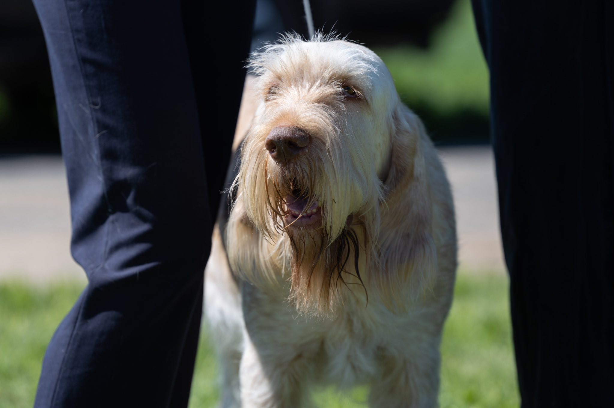
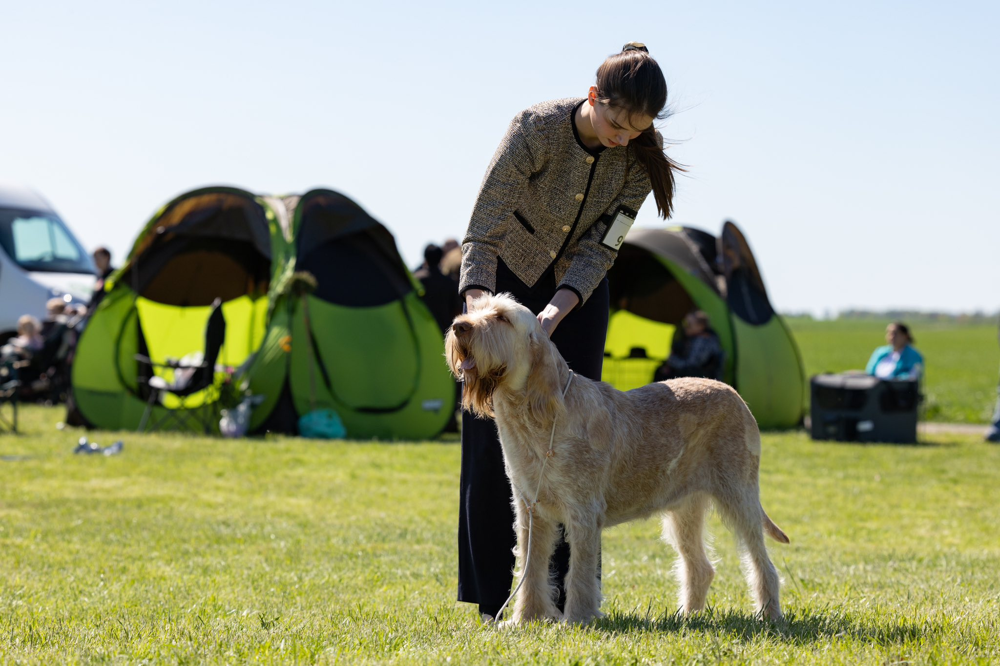
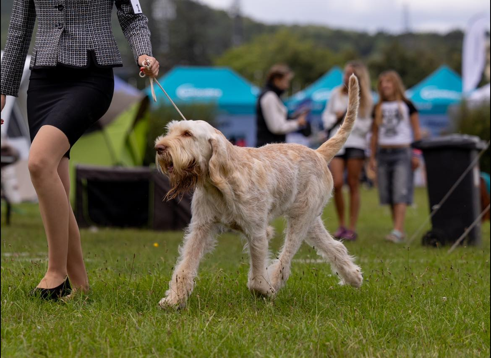
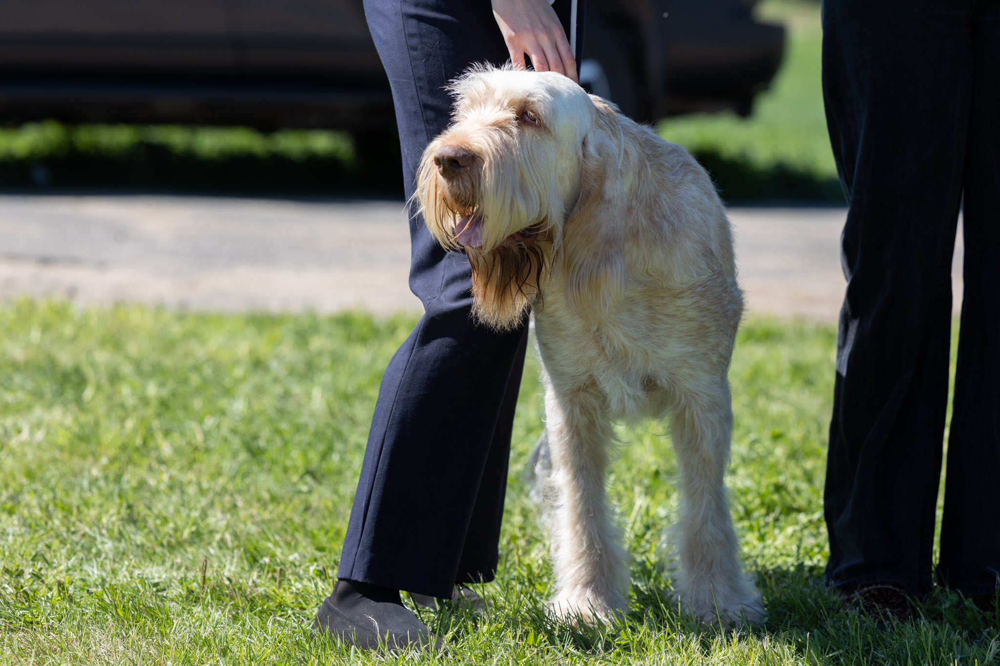

The Spinone Italiano is a large Italian hunting dog known for its calm temperament, loyal personality, and distinctive shaggy coat. Originally bred to track, point, and retrieve game, it is one of the most versatile hunting dogs in Europe.
Despite its strong working abilities, the Spinone is famous for its gentle nature and strong bond with its human family. Today the breed is both a capable sporting dog and a loving companion.
The Spinone Italiano originates from northern Italy, especially the Piedmont region. Dogs resembling the modern Spinone appear in Italian paintings from the 15th century.
The breed is believed to descend from ancient rough-coated hunting dogs that existed in Italy more than two thousand years ago. These dogs were valued by hunters because of their endurance, intelligence, and ability to work in difficult terrain such as forests, mountains, and marshes.
Unlike many faster pointing breeds, the Spinone developed a slower and more methodical hunting style. This made the breed especially useful in rough landscapes where careful tracking and a strong sense of smell were essential.
The breed nearly disappeared during World War II, when many dogs were lost and breeding programs were disrupted. After the war, dedicated Italian breeders worked to rebuild the population and restore the Spinone’s traditional appearance and working abilities.
Today the Spinone Italiano is appreciated not only as a capable hunting dog but also as a loyal family companion known for its calm, patient, and affectionate personality.
Spinoni are affectionate and sociable dogs that enjoy human company.
They are intelligent and trainable, although sometimes a little stubborn.
Spinoni bond strongly with their families and are usually great with children.
They love outdoor activities like hiking, swimming and exploring.
Spinoni are active dogs that need daily walks and outdoor activities. They enjoy long hikes and exploring nature.
Their rough coat requires brushing several times a week. Their beard may also need regular cleaning after meals.
Spinoni are generally healthy dogs but may be prone to hip dysplasia and certain eye conditions.
Positive reinforcement works best when training this intelligent but sometimes stubborn breed.



